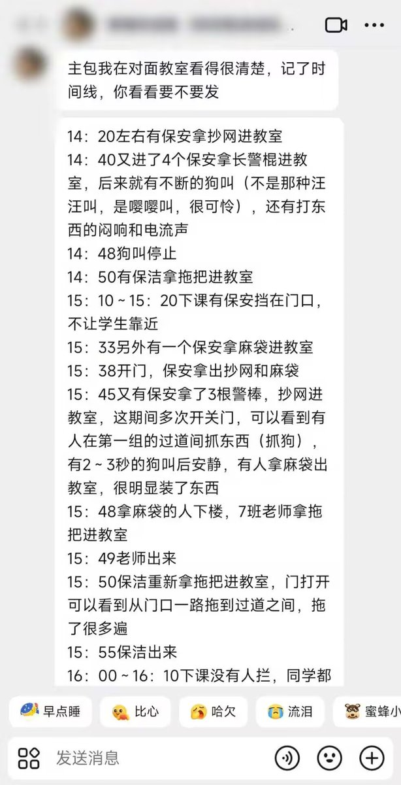
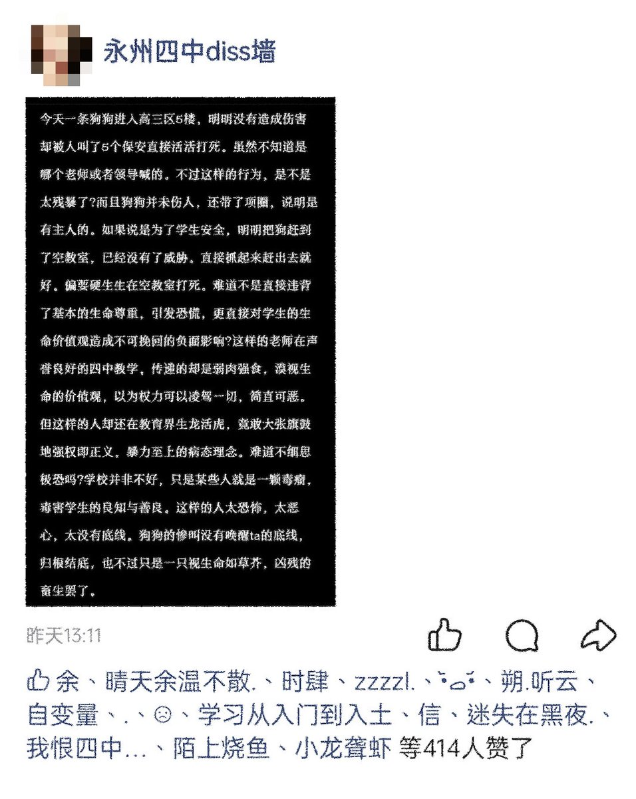
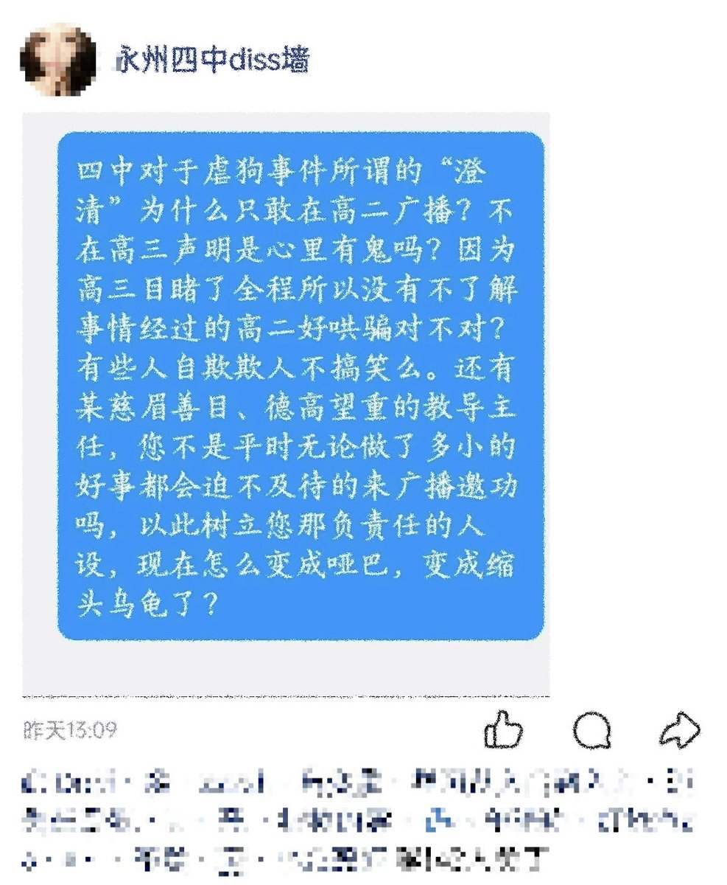
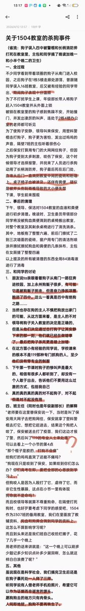

432InfantryRegiment
@432Ifantrygroup
@whyyoutouzhele 这事主要引起学生不满的地方在于既然你能联系杀狗团队，为啥不联系抓狗团队呢。不过要我说学生属于自作多情了，真要是遇上大事，保安别说打狗了，学生也照打




李老师不是你老师
@whyyoutouzhele
网友投稿：4 月 11 日星期六下午，湖南永州市第四中学狗被砍死。有一条宠物狗误闯入校园，保安以及高三年级部抓狗失败后联系杀狗团队将狗砍死（大型犬）。
事情发生在高三，却不敢在高三的广播通报此事件。 https://t.co/HGVommITXg